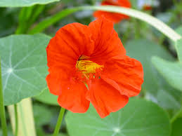

Tropaeolaceae
Nasturtium Family
Tropaeolaceae is a family of flowering plants in the order Brassicales, containing essentially a single genus, Tropaeolum, with about 90-100 species. Native to Central and South America, these are typically annual or perennial herbs, often succulent and climbing by twining petioles. They are well-known for the cultivated Garden Nasturtium (T. majus). Key features include alternate, often peltate leaves, pungent taste due to glucosinolates, showy zygomorphic flowers with a prominent nectar spur formed from a sepal, and fruit that is a schizocarp splitting into three segments.
Overview
The Nasturtium family, Tropaeolaceae, is almost entirely represented by the genus Tropaeolum. These plants originate from the Americas, particularly the Andean region, but the common Garden Nasturtium (Tropaeolum majus) is now cultivated worldwide as an ornamental and culinary plant. Many species are herbaceous climbers, using their sensitive leaf stalks (petioles) to twine around supports. Some species develop underground tubers (like T. tuberosum, Mashua), which are cultivated as food crops in the Andes.
A characteristic feature of the family, linking it to the Brassicales order, is the presence of glucosinolates (mustard oil glycosides). These compounds give the leaves, flowers, and unripe fruits a distinctive pungent, peppery taste, similar to cress or mustard greens (hence the common name "nasturtium," which originally referred to watercress, Nasturtium officinale, in the Brassicaceae family). Flowers are typically bright and showy (yellow, orange, red), strongly bilaterally symmetrical, and possess a noticeable nectar spur projecting backwards from the calyx, attracting pollinators like hummingbirds and insects.
Besides ornamentals (T. majus, T. peregrinum) and food crops (T. tuberosum), some species have traditional medicinal uses. The family is botanically interesting for its unique floral structure (spurred calyx, 8 stamens) within the Brassicales.
Quick Facts
- Scientific Name: Tropaeolaceae
- Common Name: Nasturtium family
- Number of Genera: 1 (Tropaeolum)
- Number of Species: Approximately 90-100
- Distribution: Native to Central and South America (esp. Andes); widely cultivated.
- Evolutionary Group: Eudicots - Rosids - Malvids - Brassicales
- Key Features: Often peltate leaves, spurred zygomorphic flowers, schizocarpic fruit, glucosinolates.
Key Characteristics
Habit
Plants are annual or perennial herbs, often somewhat succulent. Many species are climbers, using their sensitive, twining petioles (leaf stalks) or sometimes pedicels (flower stalks) to ascend. Some species possess underground storage tubers. Plants contain glucosinolates, giving them a pungent taste.
Leaves
Leaves are arranged alternately along the stem (though lower leaves may be opposite). They are simple but often distinctively peltate (petiole attached to the lower surface of the blade, not the margin), resulting in a rounded or shield-like appearance. Leaves can also be palmately lobed or divided. Margins are typically entire or lobed. Small stipules may be present, especially in young plants, or absent.
Inflorescence
Flowers are typically borne solitary in the axils of leaves, on long stalks (pedicels).
Flowers
Flowers are bisexual, often large and showy, and strongly zygomorphic (bilaterally symmetrical).
- Calyx: Consists of 5 distinct sepals. The most distinctive feature is that the upper (adaxial) sepal is prolonged backwards into a prominent, nectar-containing spur.
- Corolla: Consists of 5 distinct petals, often brightly colored (yellow, orange, red). Petals are frequently unequal in size and shape, typically differentiated into an upper pair and a lower three. They are often clawed (narrowed at the base) and may be fringed or lobed.
- Androecium: Contains 8 distinct stamens (rarely fewer), typically arranged in two whorls and often unequal in length. Anthers are usually basifixed and dehisce via longitudinal slits.
- Gynoecium: The ovary is superior, composed of 3 fused carpels forming a 3-locular ovary with axile placentation. Each locule contains a single pendulous ovule. There is a single slender style topped by a 3-lobed stigma. The ovary may sit on a short androgynophore.
Fruits and Seeds
The fruit is a schizocarp. At maturity, it splits into 3 (or fewer) single-seeded segments called mericarps. These mericarps are often fleshy initially but may become dry, ribbed, or winged.
Seeds are relatively large and lack endosperm; the embryo fills the seed.
Field Identification
Identifying Tropaeolaceae, particularly Tropaeolum, relies on recognizing their distinctive leaves, spurred flowers, and unique fruit, often combined with their herbaceous, climbing habit:
Primary Identification Features
- Peltate or Palmate Leaves: Look for rounded leaves with the petiole attached centrally underneath (peltate), or leaves divided/lobed like fingers of a hand (palmate). Alternate arrangement (mostly).
- Spurred Zygomorphic Flowers: Showy, bilaterally symmetrical flowers with 5 unequal petals and a distinct nectar spur extending backward from the calyx.
- 8 Stamens: An unusual number, helpful for distinguishing from superficially similar flowers.
- Schizocarpic Fruit: Fruit splitting into 3 rounded or ribbed segments.
- Herbaceous Habit (Often Climbing): Succulent stems, often climbing using twining petioles.
- Pungent Taste/Smell: Leaves and flowers have a peppery taste due to glucosinolates.
- Origin: Native to the Americas (though widely cultivated).
Secondary Identification Features
- Succulent Stems: Often fleshy or watery.
- Long Pedicels: Flowers borne on long stalks.
- 3-Lobed Stigma: Visible on receptive flowers.
Seasonal Identification Tips
- Flowering Season: Many species, especially cultivated ones, flower profusely over a long period (spring to fall).
- Fruiting Season: The distinctive 3-parted fruits develop after flowering.
- Vegetative State: The peltate or palmate leaves and climbing habit are often recognizable even without flowers.
Common Confusion Points
- Geraniaceae (Geranium Family): Some Pelargonium species have somewhat peltate or palmately lobed leaves and spurred flowers, but the spur in Pelargonium is fused to the pedicel (not part of the calyx), flowers usually have 5 or 10 stamens (variably fertile), and the fruit is a schizocarp with awns that coil or twist ('stork's bill').
- Ranunculaceae (Buttercup Family): Some members like Delphinium (Larkspur) or Aconitum (Monkshood) have spurred, zygomorphic flowers, but these have numerous stamens and distinct follicles or achenes as fruit, and usually different leaf types.
- Violaceae (Violet Family): Violets (Viola) have zygomorphic flowers with 5 petals (lower one spurred) and 5 stamens, but leaves are usually simple (not peltate/palmate) and the fruit is a capsule.
- Other Brassicales Families (Brassicaceae, Cleomaceae): Share glucosinolates but have very different floral symmetry (usually 4 petals, 6 or variable stamens) and fruit types (siliques, capsules).
- Hydrocotyle (Apiaceae/Araliaceae): Some species have peltate leaves but belong to Apiales and have tiny flowers in umbels and different fruit types.
Field Guide Quick Reference
Look For:
- Herb, often succulent & climbing
- Alternate leaves, often peltate or palmate
- Pungent taste (mustard/pepper)
- Flowers solitary, axillary, showy
- Zygomorphic flower
- 5 sepals, 1 spurred
- 5 unequal petals
- 8 stamens
- Superior ovary (3 carpels)
- Fruit a schizocarp (3 segments)
Key Distinctions:
- vs. Geraniaceae (Pelargonium): Spur fused to pedicel, different stamen #, fruit with coiling awns.
- vs. Ranunculaceae (Delphinium): Many stamens, fruit follicles/achenes.
- vs. Violaceae: 5 stamens, fruit a capsule.
- vs. Brassicaceae: Flowers usually actinomorphic, 4 petals, 6 stamens, fruit silique/silicle.
Notable Examples
The single genus Tropaeolum includes popular ornamentals and edible species:

Tropaeolum majus
Garden Nasturtium
Widely cultivated annual or perennial herb, often climbing or trailing. Known for its round, peltate leaves and large, showy orange, yellow, or red spurred flowers. Leaves, flowers, and unripe fruits are edible with a peppery taste.

Tropaeolum peregrinum
Canary Creeper, Canary Bird Vine
A climbing annual native to Peru, cultivated for its attractive, deeply lobed leaves and bright yellow flowers with fringed upper petals and a green spur, resembling a canary bird in flight.

Tropaeolum tuberosum
Mashua, Añu
A perennial climber native to the Andes, cultivated for its edible underground tubers. Tubers have a strong peppery flavor raw but become milder when cooked. Leaves are often 5-lobed. Flowers are typically orange or yellow-orange with a prominent spur.
Phylogeny and Classification
Tropaeolaceae is placed within the order Brassicales in the malvid clade of rosid eudicots. This order is characterized by the production of glucosinolates (mustard oil glycosides).
Molecular phylogenetic studies suggest that Tropaeolaceae is relatively closely related to the small family Akaniaceae (which includes Akania and Bretschneidera) and possibly Caricaceae (Papaya family). Its exact position within the Brassicales continues to be refined, but it represents a distinct lineage characterized by its unique floral zygomorphy, spurred calyx, 8 stamens, and schizocarpic fruit, contrasting with the often 4-merous flowers and different fruit types found in many other families within the order.
Position in Plant Phylogeny
- Kingdom: Plantae
- Clade: Angiosperms (Flowering plants)
- Clade: Eudicots
- Clade: Rosids
- Clade: Malvids
- Order: Brassicales
- Family: Tropaeolaceae
Evolutionary Significance
Tropaeolaceae is evolutionarily interesting due to:
- Floral Evolution: The development of strong zygomorphy, a spurred calyx for nectar production, and the unusual number of 8 stamens represent significant floral specializations within Brassicales, likely related to specific pollinators (e.g., hummingbirds).
- Fruit Type: The schizocarpic fruit splitting into mericarps is distinct from the capsules or siliques common in many related families.
- Vegetative Adaptations: Features like succulence, climbing via sensitive petioles, and tuber formation show adaptation to diverse Andean environments.
- Economic Domestication: Includes species domesticated for ornamental use (T. majus) and as a food crop (T. tuberosum).
- Phylogenetic Position: Helps understand the diversification and relationships among families within the Brassicales order.